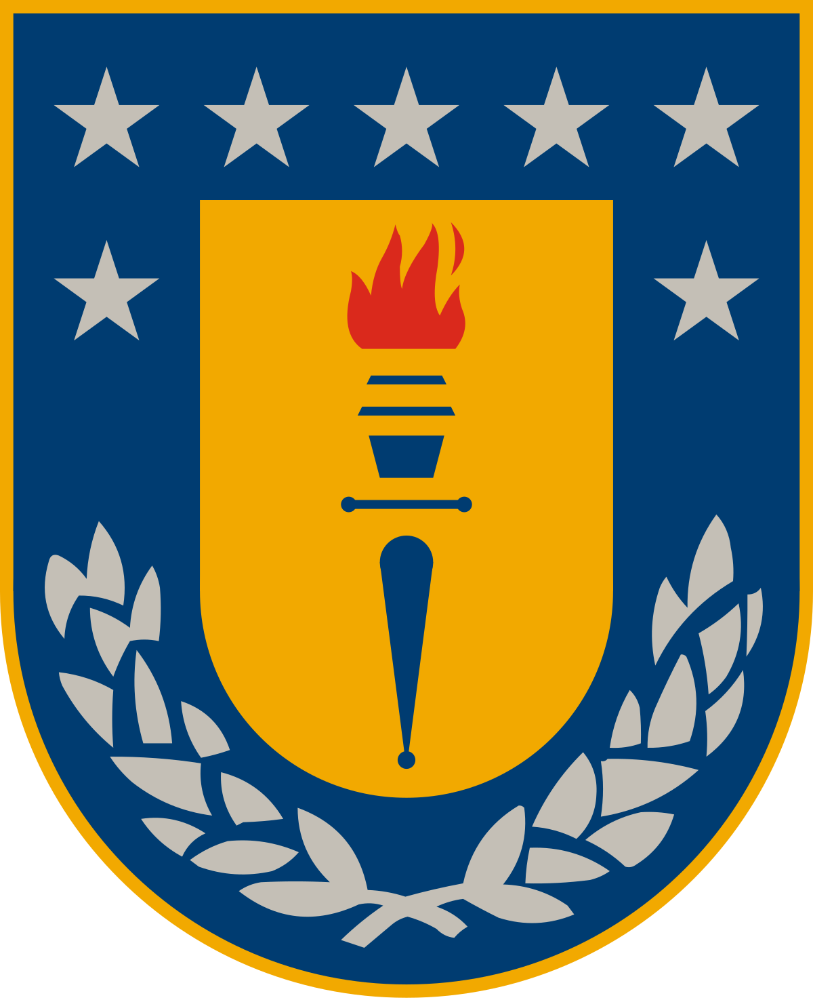

III Congreso Geoestadística y Estadística Espacio-Temporal: Teoría y Aplicaciones
November 27-29, 2024
USM, Valparaíso, Chile.
USM, Valparaíso, Chile.
| Home | Program | Directions |
Congreso Geoestadística y Estadística Espacio-Temporal: Teoría y Aplicaciones is a small conference on Advances in Statistical Methods for Spatial Statistics, that intends to gather investigators interested in problems that are in the boundary between theory and applications.
| Sites | Youtube Channels | Mobile Appss |
|---|---|---|
| Freecode Camp | Freecode Camp | Enki |
| W3Schools | Academind | Programming Hero |
| Khan Academy | The Coding Train | Solo learn |
III Congreso Geoestadística y Estadística Espacio-Temporal: Teoría y Aplicaciones is organized by professor
Francisco Cuevas (USM),
Guillermo Ferreira (UDEC) and
Ronny Vallejos (USM).
It is sponsored by Universidad Técnica Federico Santa María, Universidad de Concepción & Centro Avanzado de Ingeniería Eléctrica y Electrónica (AC3E).
Contact:
francisco.cuevas@usm.cl,
ronny.vallejos@usm.cl,
gferreir@udec.cl
|
|
 |
|
|
|